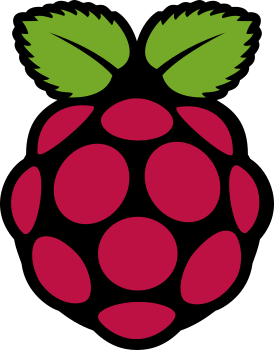

[ diagram pending ]
// Projects
Technical Projects
Hands-on networking, security, and infrastructure work. Two projects are written up; a third is underway and has no write-up yet.
All projects

Self-Hosted Personal Portfolio
This site, self-hosted on a Raspberry Pi in an isolated network segment, with automatic HTTPS, DDNS, and VPN-based management. Live at justingarter.com.
3D Printer Remote Management & Optimization
An Ender 3 V2 rebuilt on Klipper and driven from a browser over HTTPS. A LAN assessment found its control API reachable without credentials - now closed at two layers.
How these are written
What counts as finished
A project is only listed as complete here when the claims on its page were tested rather than configured. Where something has not been verified, the page says so - the self-hosted portfolio's verification log carries a row marked "not yet run" for exactly that reason.
Projects without a write-up appear as reserved slots instead of placeholder copy. An empty card is honest about its state; a paragraph of filler is not.